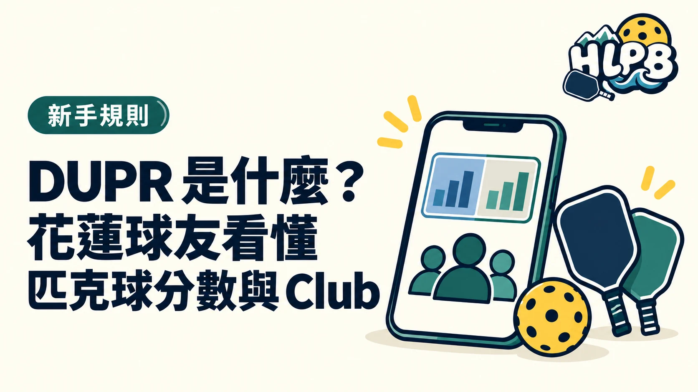

DUPR 分數是什麼？
DUPR 是依對戰紀錄更新的匹克球評分。新帳號會先顯示 NR（尚未評分），有對戰紀錄後才逐步建立分數。官方標示的範圍是 2.000 到 8.000。它和只看技能描述的2.5 到 5.0 自評指南不同。
分數會怎麼變？
- 對戰表現：系統比較實際比分與預期結果。
- 紀錄來源：Club、聯盟或賽事提交的比賽，與球員自行登錄的影響不同。
- 比賽時間與場數：較新的紀錄較能反映近況；場數多，評分通常較穩定。
官方也會顯示 Reliability Score（信賴度），用來提示資料是否足以反映目前程度。分數和信賴度是兩件事。
沒有分數，可以先參加球局嗎？
可以先找適合自己程度的球局，不必為了拿分數才開始打。若賽事要求 DUPR 分數或信賴度，依該賽事的競賽規程辦理。花蓮揪打球入口可查公開球局。
花蓮的 DUPR Club 怎麼找？
DUPR Club 是平台內的數位社群，可能由場館或球友團體建立，不一定是實體球館。登入 DUPR 後進入「Clubs」，搜尋 Hualien、花蓮或已知的團體名稱，點開 Club 頁面查看加入方式。HLPB 目前未核對花蓮 Club 的官方頁面與公開加入條件，因此不在文章中列名或代替管理員招募。
資料參考：DUPR 官方使用說明、官方 Club 說明、加入 Club 教學。
最後查證：2026-10-01｜資料來源：DUPR 官方 How It Works、Clubs、How to Join a DUPR Club
返回文章列表